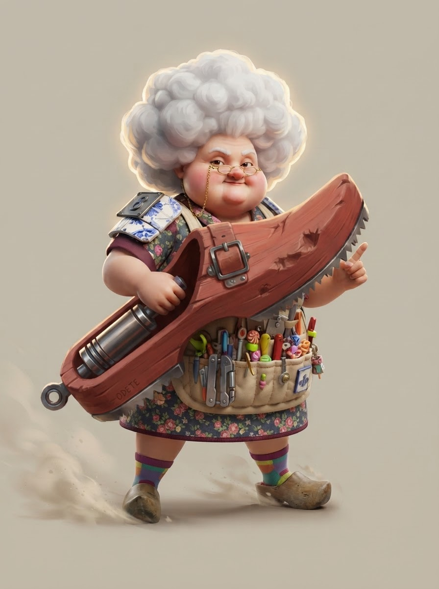

DONA CHINELA
TOPO · TANQUEUma avó baixa, fofinha e implacável. Resolve conflitos com O Corretivo, um tamanco-bazuca reconstruído a partir dos restos do Conjunto Fortaleza.
PERSONAGEM-MATRIZPróximo passo
VERSÃO 3D PARA REFAZER
Primeira família
A referência é Dona Chinela. O design de cada herói continua autoral; volume, luz, material e legibilidade precisam conversar.
3 personagens

Uma avó baixa, fofinha e implacável. Resolve conflitos com O Corretivo, um tamanco-bazuca reconstruído a partir dos restos do Conjunto Fortaleza.
PERSONAGEM-MATRIZPróximo passo
VERSÃO 3D PARA REFAZER

Pombo ciborgue, nervoso e territorial. Um assassino urbano montado com próteses assimétricas, sucata de rua e um roteador que trata sinal como alimento.
DESIGN APROVADOPróximo passo
CRAFT 3D PENDENTE

Criança congestionada e inventora de quintal. Coleta, pressuriza e dispara catarro por um sistema improvisado de mochila medicinal e flauta-canhão.
DESIGN APROVADOPróximo passo
CRAFT 3D PENDENTE
A mesma informação alimenta o roster, as fichas e a produção.
| Personagem | Concept | Sheet | Versão 3D | Carta | Vídeo |
|---|---|---|---|---|---|
| DONA CHINELA | APROVADOImagem disponível | APROVADOImagem disponível | REFAZERImagem disponível | APROVADOImagem disponível | PENDENTESem imagem |
| P.O.M.B.O. | CRAFT PENDENTEImagem disponível | CRAFT PENDENTEImagem disponível | REFAZERImagem disponível | PENDENTESem imagem | PENDENTESem imagem |
| CATARINO | CRAFT PENDENTEImagem disponível | CRAFT PENDENTEImagem disponível | REFAZERImagem disponível | PENDENTESem imagem | PENDENTESem imagem |
Frete e Bexiga pertencem ao rascunho anterior e não entram no trio ativo. O território BOT continua em revisão.